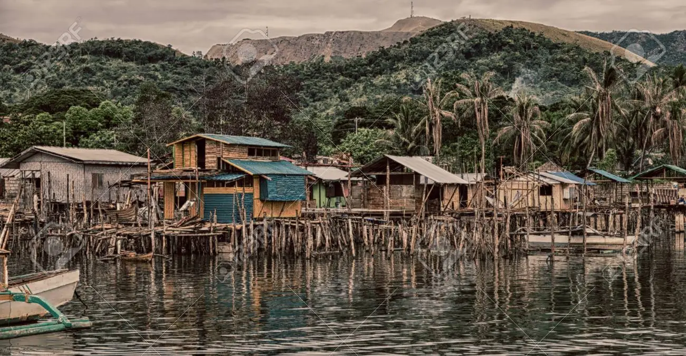

Poverty in the Philippines
The Philippines has a fairly high poverty rate with more than 16% of the population living below the poverty line. Because of the many people reliant on agriculture for an income and inequality in wealth distribution, about 17.6 million Filipinos struggle to afford basic necessities.
Causes of PovertyThe main causes of poverty in the country include the following:
- low to moderate economic growth for the past 40 years;
- low growth elasticity of poverty reduction;
- weakness in employment generation and the quality of jobs generated;
- failure to fully develop the agriculture sector;
- high inflation during crisis periods;
- high levels of population growth;
- high and persistent levels of inequality (incomes and assets), which dampen the positive impacts of economic expansion; and
- recurrent shocks and exposure to risks such as economic crisis, conflicts, natural disasters,and "environmental poverty."